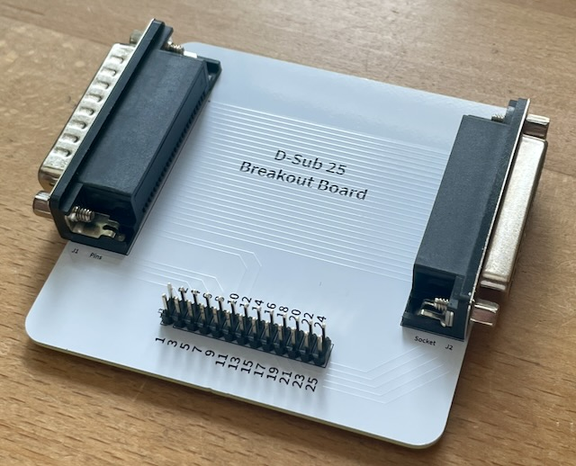
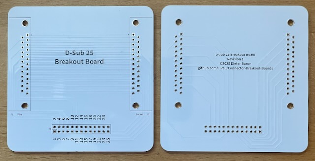

9 Stück verfügbar.
Diese Platine führt alle Pins eines D-Sub-25 Steckers und einer Buchse an eine Stiftleiste.
| Komponente | Anzahl | Preis | Anbieter |
| Platine | 1 | €1.00 | |
| 2x13 Stiftleiste | 1 | €0.32 | Reichelt |
| 90° D-Sub-25 Buchse | 1 | €0.46 | Reichelt |
| 90° D-Sub-25 Stecker | 1 | €0.58 | Reichelt |
| nur Platine | €1.00 | ||
| Bausatz | €2.36 |